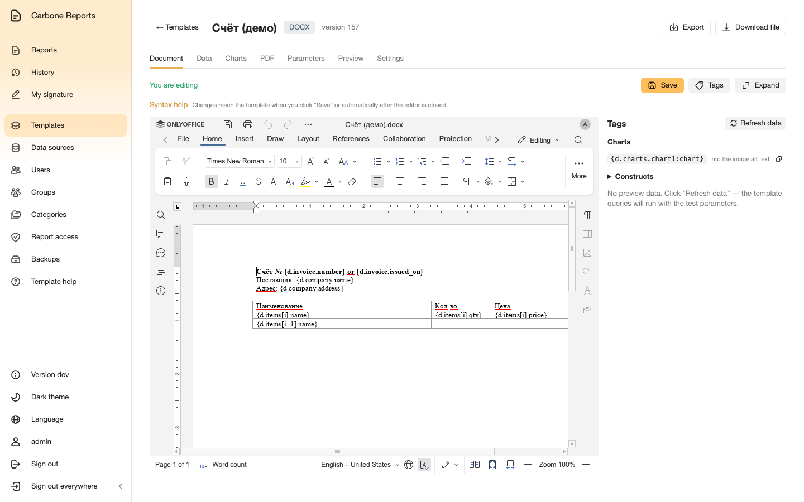
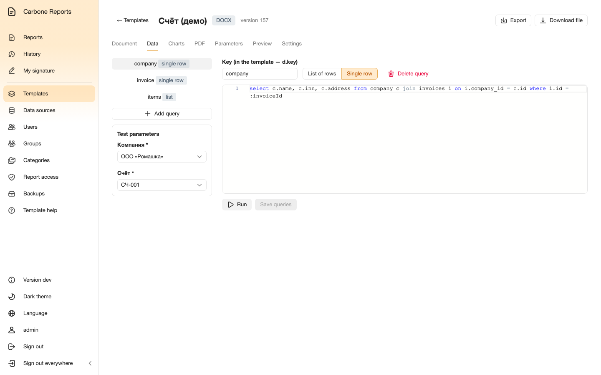
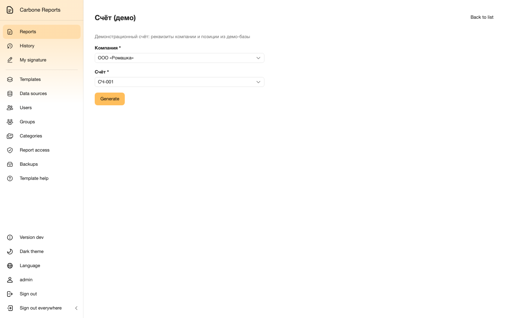
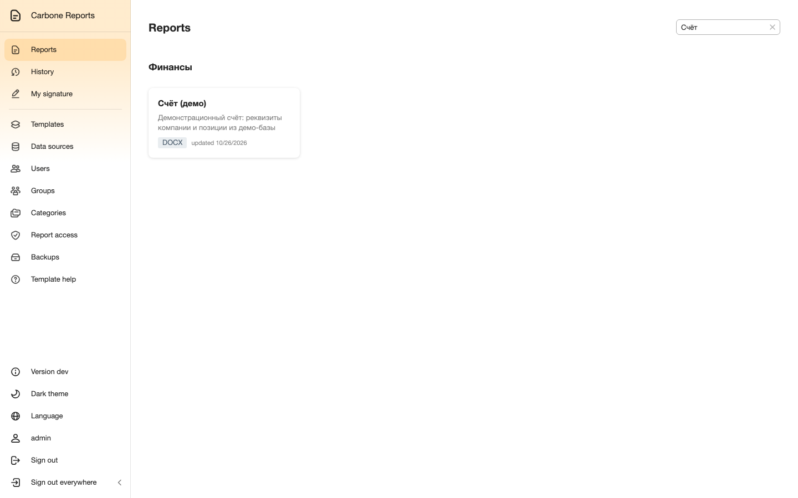
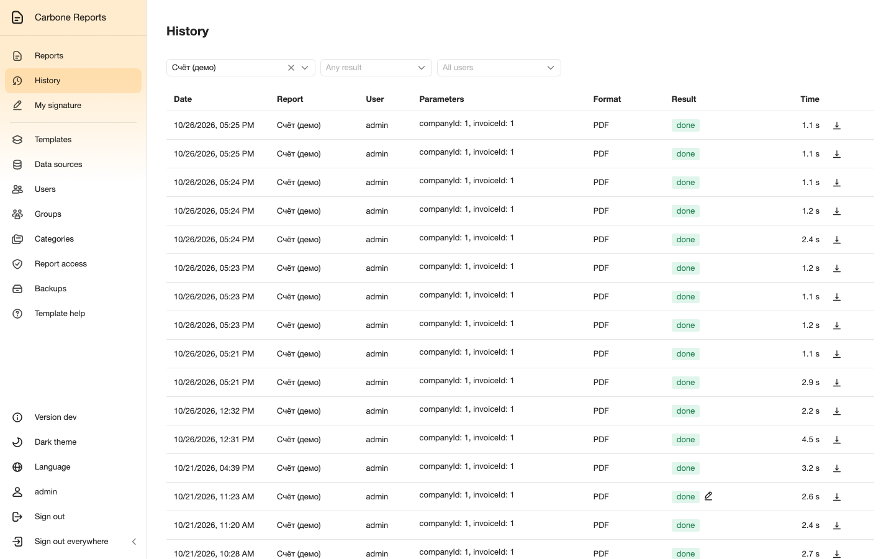
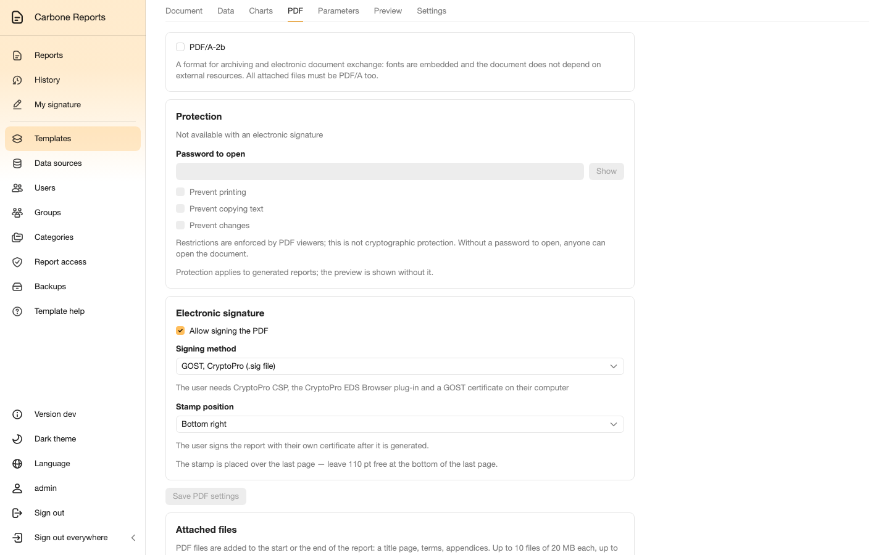
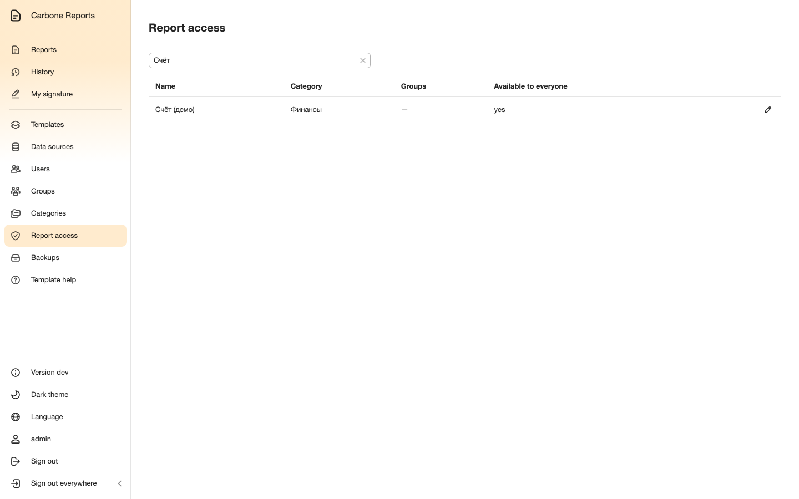
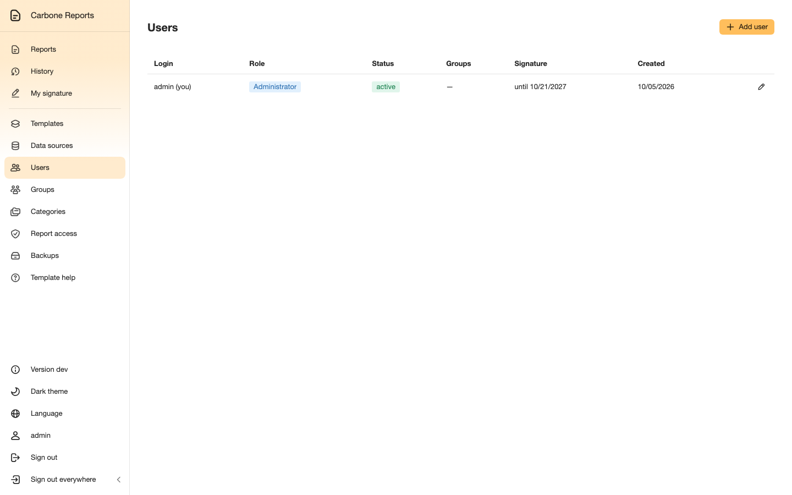
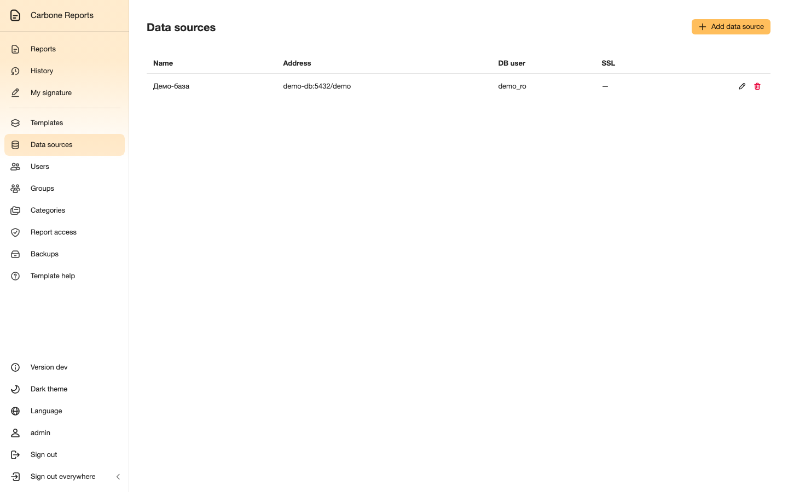
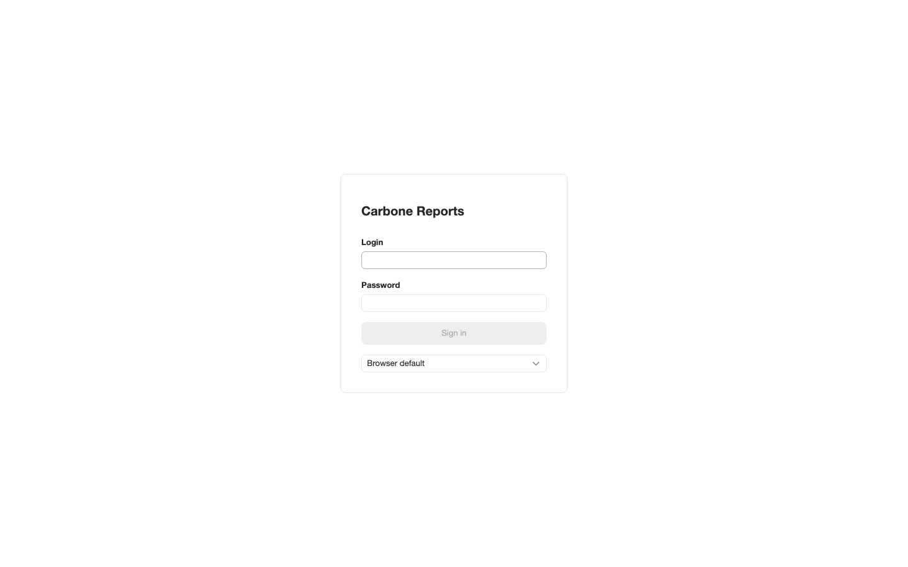

An author prepares the template
A template is an ordinary Word or Excel document with tags like
{d.company.name}. It opens in the built-in OnlyOffice editor — no Word or
Excel needed.
Data comes from SQL queries to connected databases. Queries run read-only, and report parameters are passed into them by name.




select c.name, c.inn, c.address
from company c
join invoices i on i.company_id = c.id
where i.id = :invoiceId
A user generates the report
Reports are grouped into categories; everyone sees only what they have access to.
The run form is built from the template's parameters: dates, numbers and lists, including dependent lists from SQL queries. Generated reports stay in the history: open them again, download them in another format or sign them later.






Signing and control
A PDF is signed with the user's certificate (.p12) or with a GOST key via CryptoPro — the GOST key never leaves the user's computer. PDFs can get a watermark, page numbering and standing attachments; PDF/A and password protection are available too.
Access is granted by groups and categories; roles separate users, template authors and access managers. Sign-in uses local accounts, LDAP/Active Directory or Keycloak (OpenID Connect).










Installation
The stack: web interface, API, OnlyOffice Document Server, PostgreSQL, Redis and S3 storage. On Kubernetes it is installed from the Helm chart:
helm install cr oci://ghcr.io/samrozhkov/charts/carbone-reports --version 2.18.0 -n reports -f my-values.yaml